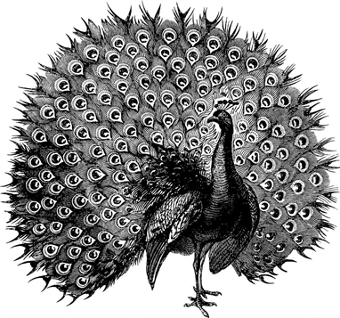

AFFIRMATION
"Personne ne peut vous faire sentir inférieur sans votre consentement."
Eleanor Roosevelt
Eleanor Roosevelt
Une personne non affirmative ne va pas s’exprimer par peur de blesser les autres, d’être rejetée, de paraitre ridicule, de déplaire ou encore par gêne ou timidité. Elle va utiliser des conduites d'évitement en trouvant de fausses excuses plutôt que de dire clairement ce qu’elle pense ou ce qu’elle désire.
L’affirmation consiste en la capacité d’exprimer de manière adaptée ses émotions, ses pensées et ses opinions de même que de défendre ses droits tout en respectant ceux des autres, ceci de façon directe, honnête et appropriée Elle correspond à un ensemble de modalités comportementales et cognitives ayant pour but d’augmenter sa capacité à s’exprimer. S’affirmer favorise ainsi l'expression efficace et efficiente de ce que l’on souhaite, ce que l’on pense, ce que l’on ressent, dans le respect de l’autre et sans redouter la confrontation.
S'affirmer ce n'est pas s'opposer mais c'est marquer une position en permettant à la fois de favoriser les modes positifs de communication et d’augmenter le sentiment de satisfaction personnelle. Et il n’est également pas toujours facile de s’affirmer, sans agressivité, et sans se diminuer face à l’autre surtout si celui-ci est en position hiérarchique supérieure. En effet, la ligne de démarcation entre affirmation de soi et agressivité est étroite, et il est facile de confondre les deux. Le comportement agressif est un rapport de domination et la personne agressive fait ce qui est dans son intérêt, sans égard pour les droits, les besoins, les sentiments ou les désirs des autres. Elle peut paraître envahissante ou même intimidante. Elle prend ce qu’elle veut, souvent sans demander, ou parfois par le biais de jugements ou de reproches blessants émotionnellement. Alors que s'affirmer nécessite d’être direct dans sa façon de communiquer sur ses désirs et ses besoins, tout en tenant compte des droits, des besoins et des désirs des autres.
L’affirmation consiste en la capacité d’exprimer de manière adaptée ses émotions, ses pensées et ses opinions de même que de défendre ses droits tout en respectant ceux des autres, ceci de façon directe, honnête et appropriée Elle correspond à un ensemble de modalités comportementales et cognitives ayant pour but d’augmenter sa capacité à s’exprimer. S’affirmer favorise ainsi l'expression efficace et efficiente de ce que l’on souhaite, ce que l’on pense, ce que l’on ressent, dans le respect de l’autre et sans redouter la confrontation.
S'affirmer ce n'est pas s'opposer mais c'est marquer une position en permettant à la fois de favoriser les modes positifs de communication et d’augmenter le sentiment de satisfaction personnelle. Et il n’est également pas toujours facile de s’affirmer, sans agressivité, et sans se diminuer face à l’autre surtout si celui-ci est en position hiérarchique supérieure. En effet, la ligne de démarcation entre affirmation de soi et agressivité est étroite, et il est facile de confondre les deux. Le comportement agressif est un rapport de domination et la personne agressive fait ce qui est dans son intérêt, sans égard pour les droits, les besoins, les sentiments ou les désirs des autres. Elle peut paraître envahissante ou même intimidante. Elle prend ce qu’elle veut, souvent sans demander, ou parfois par le biais de jugements ou de reproches blessants émotionnellement. Alors que s'affirmer nécessite d’être direct dans sa façon de communiquer sur ses désirs et ses besoins, tout en tenant compte des droits, des besoins et des désirs des autres.

L’affirmation de soi est liée à l’estime de soi et à la confiance en soi. Elle permet d’améliorer la perception que les autres ont de nous et de mieux réussir dans nos relations et nos projets.
S'affirmer c'est aussi s'autoriser à demander, à dire non, à échouer, faire et recevoir un compliment. C'est apprendre à faire une critique constructive et répondre à une critique sereinement. C'est apprendre à parler de soi et à accepter ses réussites. Et tellement plus encore...
De mon regard, l'absence mesurable d'affirmation est une affirmation délibérée avec un résultat limitant souhaité. A l'inverse, l'affirmation volontaire va favoriser un positionnement dans le contexte du moment avec un résultat constructif et projectif.
S'affirmer c'est aussi s'autoriser à demander, à dire non, à échouer, faire et recevoir un compliment. C'est apprendre à faire une critique constructive et répondre à une critique sereinement. C'est apprendre à parler de soi et à accepter ses réussites. Et tellement plus encore...
De mon regard, l'absence mesurable d'affirmation est une affirmation délibérée avec un résultat limitant souhaité. A l'inverse, l'affirmation volontaire va favoriser un positionnement dans le contexte du moment avec un résultat constructif et projectif.
EN RELATION

(in) CONFORT


IDENTITE
FRUSTRATION
AUTHENTICITE
PROJET
LEGITIMITE
NARCISSE